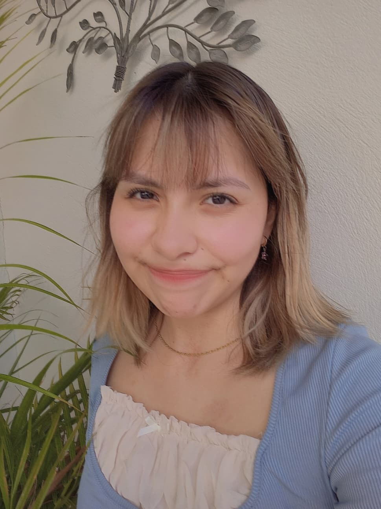

Holaaa, mi nombre es Valeria Cortes Martínez; de apodo pueden decirme Vale o Valeria por mi no hay problema!:D Nací el 2 de Julio del 2002, por lo que actualmente tengo 20 años, puedo decir que tener 20 es bonito pero siendo sincera ya no quiero crecer:c. Toda mi familia, mi novio, amig@s saben que mi color favorito es el rosa! Me gusta ese color, desde siempre. Tambien los que me conocen muy bien saben que me encanta el elote jaja y me encanta Nadar, es mi deporte favorito:) y por ultimo me gusta ver anime y leer mangas.
No les conte mucho aqui pero mas Adelante les platicare más a detalle sobre mi familia, mi novio, mis amigas, que me gusta hacer en mis tiempos libres y cual es mi cancion favorita del momento.
Mi familia se conforma por 5 integrantes, Mi mamá, mi papá, mis 2 hermanos y yo, mi hermana y yo somos cuatas, no nos parecemos mucho con tan solo mirarnos piensan que mi hermana es mayor que yo, nunca nos creen que somos cuatas siempre nos dicen que les estamos mintiendo o tambien dicen que si tenemos un cierto parecido fisicamente(aunque yo digo que no), y mi hermano es un año menor que mi hermana y yo y nos llevamos bien!! Ya que no tenemos tanta diferencia de edad y platicamos muy bien, siempre estamos haciendo chistes o riendonos de cualquier cosa xD, cuando salgo con mis hermanos siempre nos estamos riendo, sacamos temas que estan hoy en día como memes, videos, series, etc. Son mis hermanos pero tambien son como mis amigos jaja, hay veces que nos peleamos (les parecera gracioso jaja) pero despues nos enseñamos un tiktok reimos y nos contentamos. Me gusta mucho estar con mi familia y los quiero muchoo!♥♥, agradezco mucho la compañia, apoyo y amor que siempre me dan mis papas!♥♥♥;D

Les contare sobre como nos conocimos mi novio y yo:3♥, mi novio y yo nos conocimos en la prepa para ser exactos fue en segundo semestre de prepa, puedo decir que yo fui la que puso el ojo primero jajajs porque desde que lo vi por primera vez me llamo mucho la atención:3 a mi me daba mucha pena hablarle y mi mejor amiga de la prepa hizo un plan para hablarnos (otra historia jsjs) y es ahí que después mi novio me vio a mi y empezamos a hablar y conocernos y conectamos increíble!♥♥ cada vez que hablábamos era increíble a veces decíamos lo mismo o pensábamos lo mismo y pienso que el destino nos unió jiji no había día en que no me topara con mi novio ya sea en la prepa o fuera de la prepa, nos estuvimos conociendo todo segundo semestre de preparatoria y nuestra relación empezó el día 23 de octubre del año 2018 un día muy feliz e inolvidable!!♥, llevamos actualmente 3 años y falta poco para que cumplamos 4 años de relación!♥♥ Aun seguimos muy conectados, enamorados y muy felices estoy agradecida de haber coincidió con mi novio ♥♥♥.

Les contare de mis mejores amigas, mis mejores amigas las conoci en la preparatoria, somos 6 amigas contandome a mi jeje quienes son Karla, Mariana, Ariam, Madison y Lupita las quiero y adoro bastante!♥♥, fueron mi gran compañia en la prepa y lo siguen y siempre lo seguiran siendo!;) Les contare como las conocí :D, las conocí en primer semestre de preparatoria, era mi primer día de la preparatoria no conocia a nadie no hablaba mucho ya que en se entonces era muy penosa y de repente nos juntaron en equipos y ahí conoci a mi amiga Marianita quien fue mi primera amiga de la preparatoria y ahí Marianita me presento a Karlita, Ariam, Madi, Lupita ♥ y desde ahí nunca nos hemos separado!;) No saben lo agradecida que estoy de haberlas conocido y tener su maravillosa amistad, siempre estuvieron y estan para apoyarme como yo para ellas siempre! No sabia que tambien las amigas te ayudaban a mejorar y ellas lo hicieron, me ayudaron a tener mas confianza de mi misma y se los agradezco siempre! fueron y son mis mejores consejeras, Nunca pense que tendria una amistad que durara tantos años y fuera tan bonitaa♥, hasta el día de hoy estamos en contacto y cuando nos reunimos mis amigas y yo siempre estamos riendonos y contandonos como nos va en la facultad, ya no tenemos mucho tiempo como antes para platicar por razones de escuela pero cuando alguien necesita ser escuchada, necesite apoyo o tan solo vernos porque nos extrañamos, siempre estaremos ahí todas sin duda alguna!!! Las adoro♥

Es una foto del años pasado y es por eso que falta una amiga:(
En mis tiempos libres me encanta escuchar musica, me gusta mucho dibujar aunque no soy muy buena pero con el tiempo y practica mejorare! Me tranquiliza mucho,me gusta ver animes y leer mangas, por ultimo me encanta nadar, ahora he regresado a nadar y es mi pasatiempo favorito del momento, ya que me considero buena en natacion y es mi deporte favorito, Me encanta salir con mi familia, con mi novio o mis amigas, me divierte mucho salir acompañada o tambien sola. Creo que es lo unico que me gusta hacer en mis tiempos libres.

les mostrate mi cancion favorita del momento, me gusta esta cancion más que nada por el ritmo de la musica, la letra de la cancion para mi es un poco triste pero el ritmo que trasmite me gusta mucho, me encantaria presenciar algun día esta cancion en un conierto de Tample Impala!!